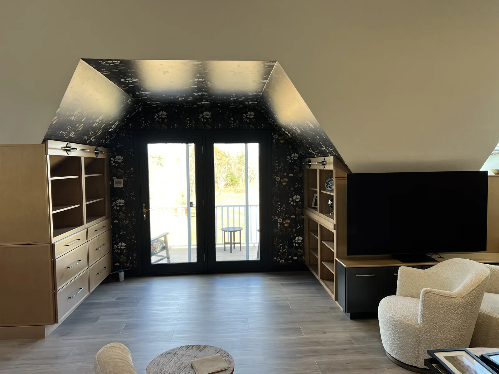

Beverly remodeling contractors
Beverly remodeling contractors for home upgrades planned before demolition
Beverly homeowners often need remodeling work that respects the character of the property while making daily use easier. DeFaria Construction helps define scope, finish choices and sequencing before the project starts.
Local search focus
Beverly remodeling should account for layout, age and finish expectations.
Homes around Beverly Farms, Ryal Side, North Beverly, Montserrat and Downtown Beverly can vary from older coastal properties to more conventional suburban layouts. A useful remodeling estimate should define what changes structurally, what stays protected and which finish decisions affect the schedule.
This page is built for homeowners comparing remodeling contractors near them. It connects Beverly search intent to project photos, neighborhoods, related service pages and a direct estimate path.
- Clear estimate conversations before the project starts.
- Direct communication with homeowners and business owners.
- Local coverage across Essex County and Middlesex County.
Areas covered
A Beverly page needs to answer more than a city keyword.
This page supports Beverly remodeling contractors searches and related local intent. It gives visitors enough context to decide whether DeFaria Construction is relevant before they call.
- Beverly Farms
- Prides Crossing
- Ryal Side
- North Beverly
- Montserrat
- Centerville
- Downtown Beverly
Project photos
Remodeling photos for Beverly homeowners
The Beverly remodeling page uses service photos and neighborhood context so visitors can compare finish quality before requesting an estimate.



Experience
Why this page is built for real visitors, not just keywords.
DeFaria Construction is a local construction and remodeling company serving homeowners and business owners in Massachusetts. The company records show direct owner involvement from Luiz DeFaria and BBB credibility as part of the trust stack, so the page is written around project clarity, service area fit and practical next steps instead of repeating a city name without value.
The goal is to help someone searching for Beverly remodeling contractors understand the type of work, the local areas covered and how to start a direct conversation with the contractor before requesting an estimate.
Request an estimateFAQ
Common questions about Beverly remodeling contractors
What remodeling work can DeFaria Construction handle in Beverly?
DeFaria Construction can support interior remodeling, home updates, kitchen or bathroom-related finish work and broader remodeling projects that need a clear scope.
Why create a Beverly remodeling page?
Beverly homeowners often search by city before calling a contractor. A local page answers that intent with neighborhood context, service photos and a clearer path to an estimate.
How should a Beverly remodeling estimate start?
A useful estimate starts with a walkthrough, project goals, finish expectations, access needs and any decisions that could affect sequencing or budget.